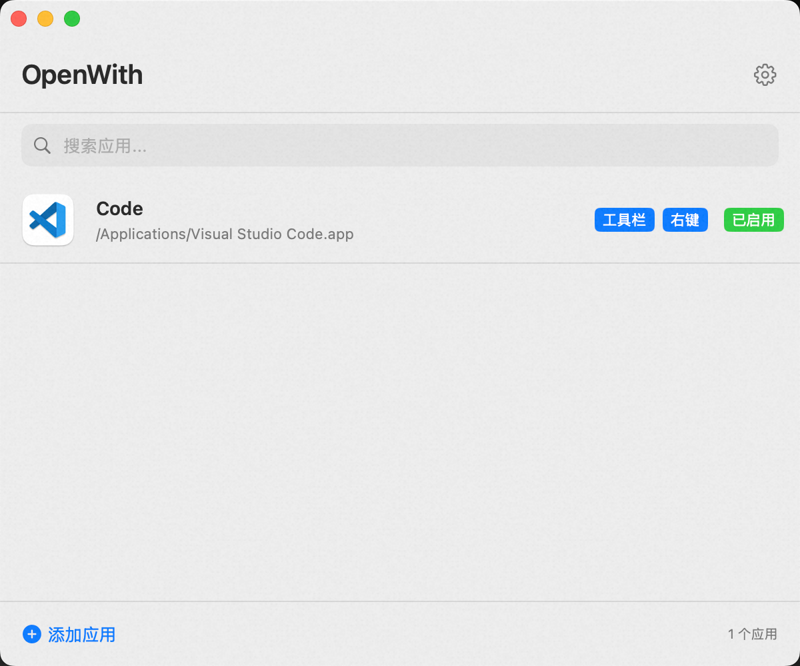

Open Finder Folders in Any App 在 Finder 中一键打开任意应用
Add a toolbar button or right-click menu to Finder, and instantly open any folder in Terminal, VS Code, iTerm2, or any app you choose. 在 Finder 工具栏添加按钮或使用右键菜单，即可快速用终端、VS Code、iTerm2 或任何应用打开文件夹。

